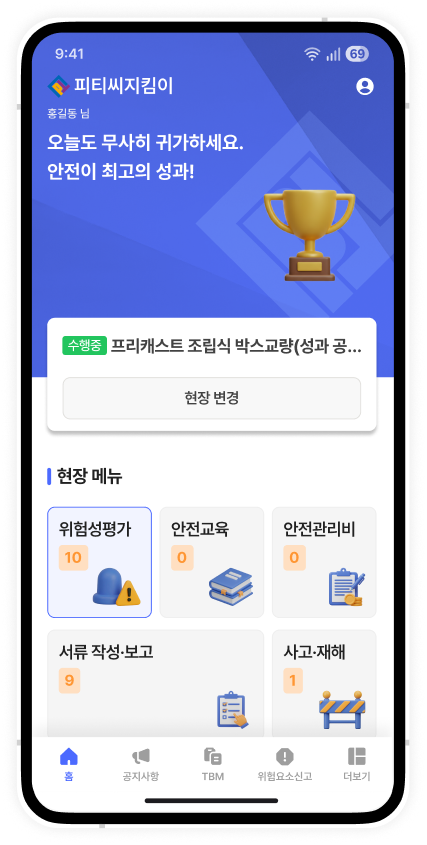
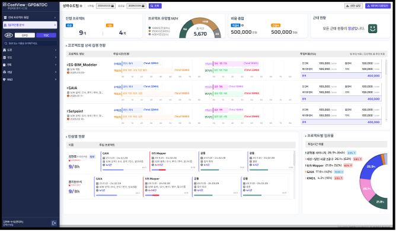
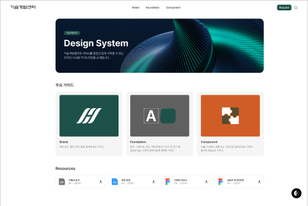
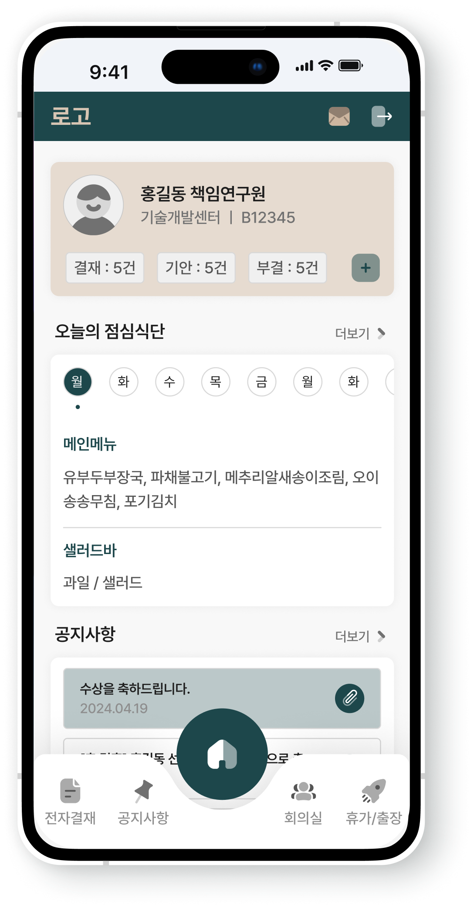
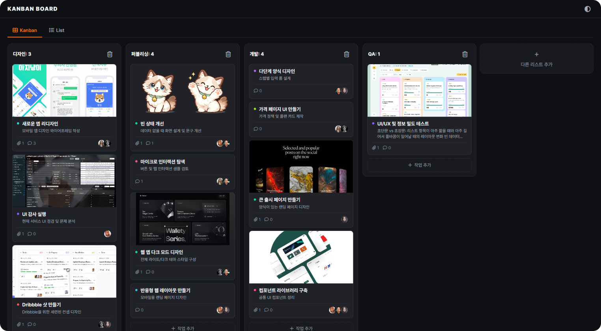
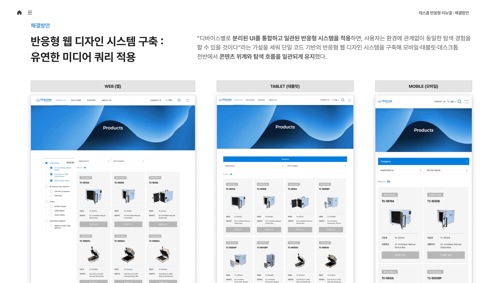
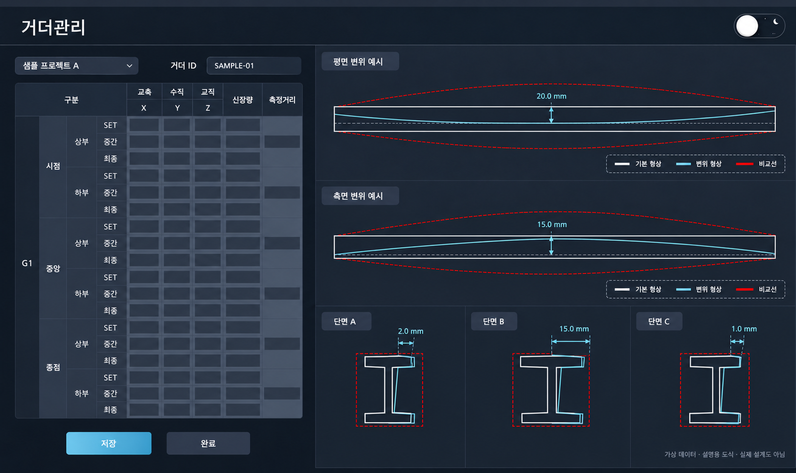
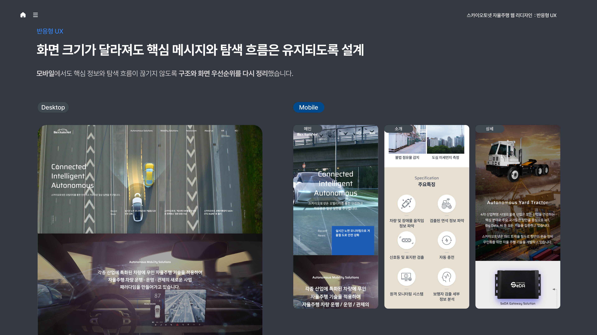
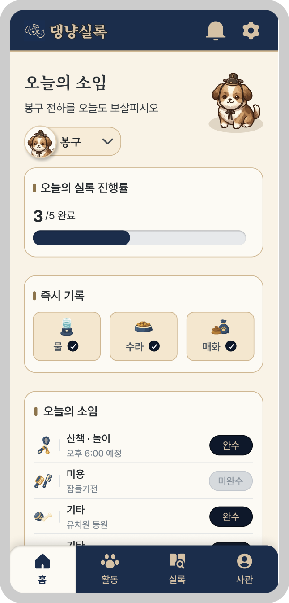

WEB PLATFORMUX/UI
지도와 업무 자료를 연결한
통합 관리 플랫폼.
흰색·검정·반투명 검정 메뉴안을 비교해 선택했습니다. 배포 후 실제 사용됐으며, 내부 동료에게 메뉴 구분이 명확하다는 의견을 받았습니다.
- 문제
- 초기 메뉴에서 기능 분야를 구분하기 어려움
- 결정
- 메뉴 구분과 지도 배경의 연속성
- 담당
- 메뉴 UI · 지도 탐색 UI · 퍼블리싱
SELECTED PROJECTS / 01—03
배포된 플랫폼과 현장 기록,
비용·인원 ERP의 설계 과정을 담았습니다.
흰색·검정·반투명 검정 메뉴안을 비교해 선택했습니다. 배포 후 실제 사용됐으며, 내부 동료에게 메뉴 구분이 명확하다는 의견을 받았습니다.

배포 후 실제 사용된 서비스입니다. 담당자 요청으로 PDF·HWP 파일 열람 UI를 추가했고, 사용자 의견은 개발자를 통해 전달받았습니다.

조회 조건에서 주요 수치와 상세 내역으로 이어지는 웹 UI를 설계·퍼블리싱했습니다. PDF 제공으로 변경되어 웹 설계안은 최종 미사용입니다.
MORE WORK / 04—10
팀 내부 모바일 설계와 개인 프로토타입,
그 밖의 웹·앱 설계 경험입니다.

04 · COMMON UI · WEB GUIDE
SCSS 컬러 변수와 입력·검색 상태 정리 · 컬러와 일부 UI 요소를 디자인·프론트 작업에 재사용

05 · TEAM PROJECT · MOBILE WORKFLOW
팀 프로젝트 · 미배포 · 팀 내부 설계·구현 확인 · 회의실 예약·근태 신청 모바일 화면의 기획·UI·퍼블리싱 참여

06 · PERSONAL PROJECT · AI-ASSISTED PROTOTYPE
개인 프로젝트 · 프로토타입 · 보드 UI · 카드 이동 · 작업 생성 프로토타입

07 · RESPONSIVE WEB · UI RENEWAL
업무 프로젝트 · 반응형 웹 설계 · 제품 탐색 구조 · 반응형 화면 · UI 규칙 설계

08 · B2B PLATFORM · FIELD DATA
업무 프로젝트 · 웹·앱 설계·퍼블리싱 · 현장 측정 흐름 · 웹·앱 UI · 퍼블리싱

09 · WEB UX · BRAND UX · RESPONSIVE
업무 프로젝트 · 반응형 웹 설계 · IA · 브랜드 메시지 · UI 설계 · 퍼블리싱 참여

10 · B2C · HABIT UX
개인 프로젝트 · 설계 진행 중 · 건강 기록 흐름 · 브랜드 · 모바일 UI 설계
ABOUT / 이한울
웹디자인과 퍼블리싱으로 시작해, B2B 제품의 정보 구조와 업무 흐름으로 설계 범위를 넓혔습니다.
기획자·개발자·엔지니어와 요구사항을 조율하며 메뉴, 기록 입력, 데이터 조회 화면을 구체화했습니다.
정보 구조 / 업무 흐름 · UI Design · Figma · HTML / CSS / SCSS · JavaScript · Git · React 학습 중
포트폴리오 PDFNEXT CHAPTER
UX/UI · Product Designer / B2B · 업무 플랫폼